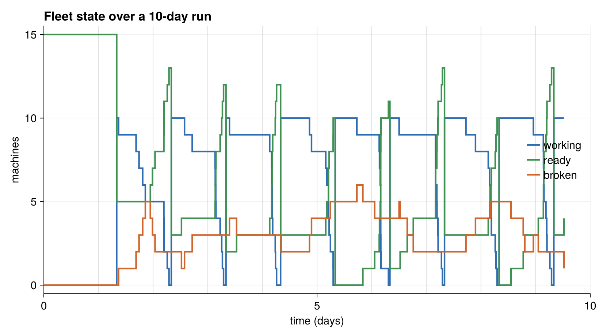

Running the Reliability Model
The entry point
The hand-written model exposes run_reliability(days), which builds a 15-machine fleet with a crew cap of 10 and runs it for the requested number of days:
function run_reliability(days)
physical = IndividualState(15, 10)
included_transitions = [StartDay, EndDay, Break, Repair]
trajectory = TrajectorySave()
sim = SimulationFSM(
physical, included_transitions;
rng=Xoshiro(2947223), observer=trajectory,
sampler=NextReactionMethod(), key_type=Tuple)
initializer = (physical, when, rng) -> initialize!(physical, rng)
stop_condition = (physical, step_idx, event, when) -> when > days
ChronoSim.run(sim, initializer, stop_condition)
return sim.when
endThe stop_condition sees each chosen event before it fires, so the run stops cleanly at the requested day boundary rather than partway through an event.
To run it:
using ChronoSimExamples.ReliabilitySim
ReliabilitySim.run_reliability(10.0) # ten simulated days
Reconstructing the run with a state-counting observer shows the daily rhythm: each morning StartDay lifts the working count to the crew cap of 10, machines trickle back to ready as they finish, and a growing tail sits broken awaiting repair.
The derived twin has a matching entry point, run_reliability_derived(days), which is identical except that it attaches no observer.
The tests
The dedicated tests in test/test_reliability.jl are intentionally minimal — two smoke checks with no assertions on the numbers produced.
The first confirms the state constructs:
@testset "Reliability smoke" begin
using ChronoSimExamples.ReliabilitySim
is = ReliabilitySim.IndividualState(15, 10)
endThe second runs the whole simulation end to end, adjusting the log level for CI:
@testset "Reliability run" begin
using ChronoSimExamples.ReliabilitySim
ci = continuous_integration()
log_level = ci ? Logging.Error : Logging.Debug
with_logger(ConsoleLogger(stderr, log_level)) do
run_reliability(10)
end
endPassing without error means the fleet ran for ten days: machines went to work, some finished their day, some broke down and were repaired, and the aging clocks behaved. There is no assertion on trajectory contents here.
Where the model is checked more rigorously
The substantive checking of this model does not live in test_reliability.jl. It happens in the tests that compare the hand-written model against its derived twin, which is why the two share clock keys:
test/test_differential.jlrunsReliabilitySimandReliabilityDerivedSimfrom the same seed and asserts their trajectories match step for step — the guarantee that hand-written and derived triggers are equivalent.test/test_overapprox.jlruns both and compares aggregate statistics, and measures the extra proposal cost the derived generators pay for their over-approximation.
If you want a worked example of the θ seam that reliability deliberately avoids, see the landspread model; for the record, check, and differentiate workflow, see the repair shop.